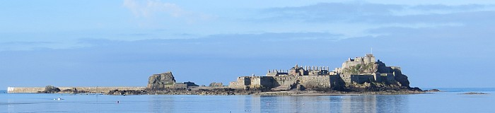

Quant chès l'temps des députations
Quant chès l'temps des députations, si ch'est que l'sien qu'nous d'mande de r'prendre la poste pouor-une autre trais ans n'd'vise pon fort ès Etats, nous dit tréjous que ce ne sont pas les d'vis qui comptent mais l'travas qui s'fait en couomitté. Pouor seur, il y a hardi d'vérithèt dans dithèt r'merques mais p't'être bein que chein qui s'passe en Couomitté n'est pon tréjous pliaisant, surtout quant nous est un miot tétouanne de sa sorte.
Mé, j'ai oui pasler d'une scène qui s'passi il y a tchique temps dans ieunne des salles du greffe et j'sais bein qu'un Recteur d'vint fort mârri en viyant un député fumer une cigarette.
A dithe la vérithèt, l'affaithe cauffi pu que la cigarette à notre Député, car chu Recteur était si mârri qui s'lèvi et n'voulit pon craithe à l'extchuse que ch'tait par habitude que notre député avait ieut l'malheur d's'présenter la cigarette à la becque!
L'pouorre homme en resti touot ébaubi en entendant l'sermon de Moussieu l'Recteur.
Viyant que l'affaithe n'est pon encouore settlée et qu'nos deux membres du Couomitté sont pour seur des gens de religion, mé, touote bête que j'sis, j's'rais d'avis d'lus rappeler, pouor que lus mauvaise humeuthe s'n'aille en fumée, que nous pouorrait dithe que la cendre de cigarette est buanne chose pouor rappeler ès grands d'la terre qu'nous n'est que cendres ou poussièthe, et qu'nous r'devindra cendres ou poussièthe, siez pids souos terre!!
Ch'est p't'être pouor chunna que nous fit mettre des ash-trays dans chutte salle tchiques jour d'vant.
Honni soit qui mal pense à mes d'vis.
***
J'sais bein èttout qu'a une réunion de gens de grande éducation l'affaithe cauffi un p'tit et qu'un grand Connétable s'mârri et s'fit qu'il allait démissioner couomme membre de chu Couomitté. Pouor touot dithe, j'crais qu'il l'aurait fait èttout car ch'est un homme de pathole mais j'n'crais pon qu'nous en entendra mot.
Tais ta becque, Marie, n'en v'la assez pouor faithe vais que tu en sais plus que tu n'veur dithe!!
***

J'alli èttout à la fête au
Châté Elizabeth et j'peur vos dithe que pas ieun d'nos grands des Etats n'eut l'mal de mer et il n'y eut rein a faithe pouor l'steward si steward y avait à bord. J'etais jutchie sus l'haut du mât du
Duke et j'vit bein touot chein qui s'passi à bord.
Ch'est qu'il y en avait des "chuminées'' à bord du bâté! Et de touotes les shapes.
J'n'y couonnais rein en tout mais p't'être bein que l'buanhomme Brown, l'seul en Jerri qui fabrique des chapiaux, aurait pu dithe lequel de ces top-hats nouos aurait pu envièth au musée couomme tchuriosité du temps passé!
J'couonnais une Missis qui n'eut pon besoin d'faire de thée en rentrent sièz ly, oprès la cérémonie, car ch'est que l'Couomité des Travaux Publics fit bein les choses et ch'n'tait pon des galettes qu'nous offrit ès invités mais de tchi bé buan, a en jugi par chein qu'oulle en mangi!! Viyant que n'v'la qui etait un miot chucré et qui faisait hardi caud, par méprinse pouor seur, deux fais j'la vit prendre une verrée pliaine de champagne pouor la sienne qu'oulle avait quassiment suppé d'vant d'la mettre sus la table et d'commettre dithèt méprinse.
A buan entendeur salut!
Caouain
9/6/1923
Viyiz étout: